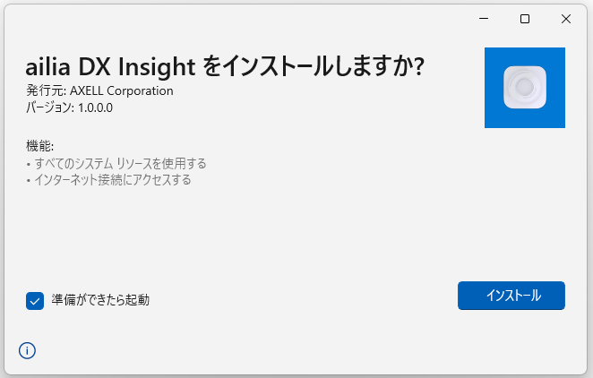
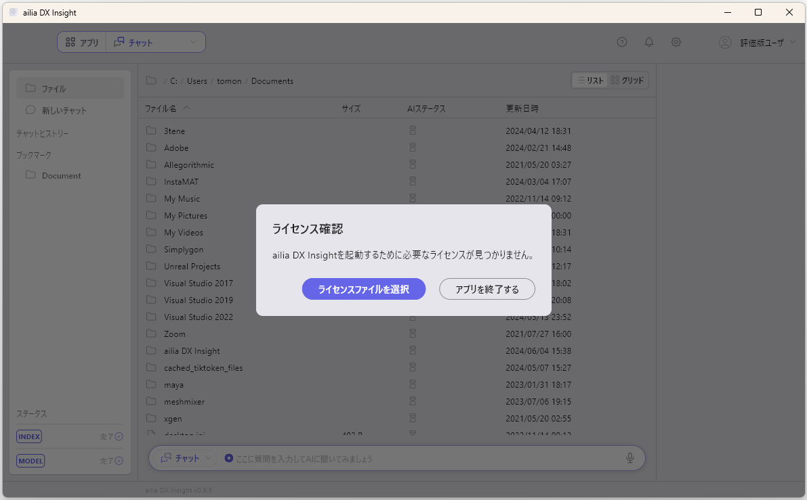
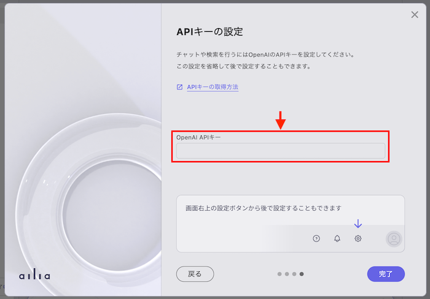
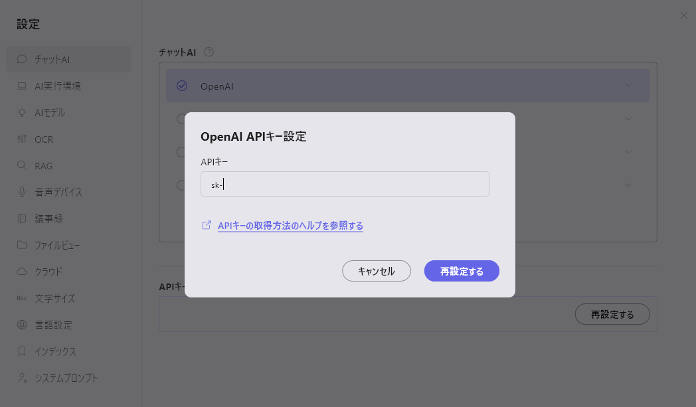

セットアップ
ダウンロード
ailia DX Insightをダウンロードして、zipを解凍します。
起動
Windowsの場合は、aillia_dx_insight.msixをダブルクリックして起動します。 macOSの場合は、ailia_dx_insighe.appを右クリックして開くで起動します。

ライセンスファイルの選択
ライセンス確認のウィンドウが表示されるので、ライセンスファイルをフォルダから選択します。

OpenAIのAPIキーの取得
OpenAIのWEBページでアカウント登録を行い、OpenAIのAPIキーを取得します。 OpenAIのAPIキーを入力しなくてもailia DX Insightは使用できますが、機能が制限されます。
セットアップ
初回起動時にはチュートリアル画面が表示されます。

チュートリアルの最終画面にて、OpenAI APIキーの設定が可能です。
OpenAI APIキーの設定
チュートリアルから設定する場合
- チュートリアルの最後、「APIキーの設定」まで進みます。
- 「OpenAI APIキー」の下にあるテキストボックスに、"sk-"から始まるOpenAI APIキーを入力します。
 - 「完了」ボタンを押します。
- 通常画面から設定する場合
- 画面右上にある歯車アイコンを押します。

- 表示されたダイアログ内のテキストボックスに、"sk-"から始まるOpenAIのAPIキーを入力します。
 - 使用するchatGPTのバージョンを選択し、「閉じる」ボタンを押します。
AIモデルのダウンロード
初回起動時のチュートリアルの終了後、AIモデルのダウンロードが開始されます。 ダウンロードの進捗は左のサイドバー下部にて確認できます。

ダウンロード完了後、ailia DX Insightが使用可能となります。